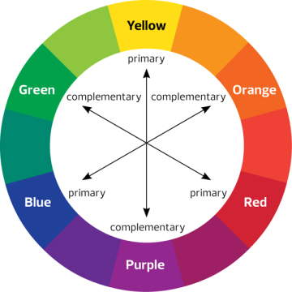

КОЛЬОРИ У WEB-ДИЗАЙНІ: ВИБІР ПРАВИЛЬНОГО ПОЄДНАННЯ ДЛЯ ВАШОГО САЙТУ
Колір, безперечно, є важливим джерелом емоції. Кольори можуть встановлювати правильний тон та передавати необхідні емоції відвідувачам, можуть схвилювати, викликати безліч почуттів та стимулювати до дій. Він є надзвичайно потужним чинником на користувачів.
При виборі кольорової гами для сайту важливо зробити це правильно, керуючись основними принципами теорії кольору. У статті розглядаються найбільш значущі аспекти при виборі, основні принципи поєднання, призначення кольору y веб-дизайні та його символічне значення. Крім того, Ви побачите кілька хороших прикладів відповідно до переважаючих кольорів, a також ознайомтеся з деякими корисними порадами, щоб ефективно використовувати кольори при створенні веб-сайту.
КОЛО КОЛЬОРІВ
Трохи історії: коло кольорів винайшов Ісаак Ньютон. Обгрунтувавши теорію світла та квітів у 1666р. Саме вона лягла в основу становлення та розвитку сучасної оптики, малою та складовою якої є web-дизайн. Ньютон за допомогою тригранної скляної призми розклав біле світло на сім кольорів (у спектр), тим самим довівши його складність (явище дисперсії), відкрив хроматичну аберацію.
Коло кольорів є неодмінним атрибутом багатьох дизайнерів та художників по всьому світу. Це ідеальний доказ теорії, що геніальне завжди просто. Коло дозволяє вам вибрати кольори, які гармоніювали б разом. Він складається з 6 основних кольорів: червоний, помаранчевий, жовтий, зелений, синій, фіолетовий та додаткових кольорів.
Щоб знайти правильну колірну схему, необхідно використовувати будь-які два кольори один навпроти одного, будь-які три кольори на рівній відстані при формуванні трикутника або будь-якого з чотирьох кольорів, що утворюють прямокутник (дві пари кольорів один навпроти одного). Колірні схеми залишаються правильними незалежно від кута повороту.
ОСНОВНІ КОЛЬОРИ ЇХ ТРИ
Є три основні кольори: червоний (#ff0000 у HTML або #F00 у CSS), жовтий (#FFFF00 у HTML або #ff0 у CSS) та синій (#0000FF у HTML або #00f у CSS). Не можна їх одержати шляхом змішування інших кольорів. Додаткові кольори можуть бути сформовані шляхом поєднання цих трьох кольорів.
СКЛАДОВІ КОЛЬОРИ ЇХ ТЕЖ ТРИ
Є також три основні: помаранчевий (#ff9900 у HTML або #F90 у CSS), зелений (#00FF00 у HTML або #0f0 у CSS) та фіолетовий (#FF00FF у HTML або #f0f у CSS). Ви можете отримати їх шляхом змішування червоного та жовтого (помаранчевого), жовтого та синього (зелений) та синього та червоного (фіолетовий).
ТРЕТИЧНІ КОЛЬОРИ
Щоб отримати один із третинних кольорів, необхідно змішати один основний колір та один вторинний колір. Можливості для третинних кольорів безмежні.
ДОДАТКОВІ КОЛЬОРИ
Додаткові кольори розташовані навпроти один одного на колірному колі: червоний і зелений, синій і помаранчевий, фіолетовий і жовтий. У поєднанні один з одним, вони становлять разючий контраст. Такі поєднання зазвичай використовуються для виділення деяких елементів на веб-сайті.
АНАЛОГІЧНІ КОЛЬОРИ
Ці кольори розташовані поруч один з одним на колірному колі. Вони зазвичай дивляться дуже добре разом. Використання таких поєднань кольорів викликає почуття комфорту у відвідувачів Вашого сайту.